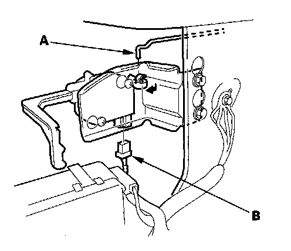
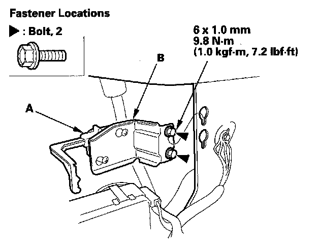

Fuel Door Release Actuator: Service and Repair
Fuel Fill Door Actuator ReplacementNOTE:
- Put on gloves to protect your hands.
- Take care not to scratch the rear bumper.
1. Remove the left rear side trim panel.

2. Disconnect the actuator rod (A) and the actuator connector (B).

3. Loosen the bolts, then remove the actuator (A) and the bracket (B) together by sliding it upward.
4. Install the fuel door actuator in the reverse order of removal, and note these items:
- Make sure the actuator connector is plugged in properly, and the rod is connected securely.
- Make sure the fuel fill door opens properly and locks securely.